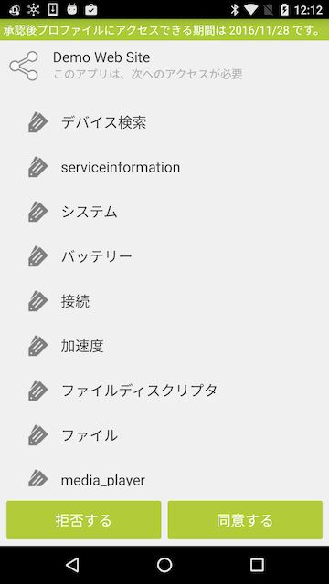

HTMLアプリからDevice Connect Managerがなりすましされていないことを確認するためのキーワードを設定します。
ユーザが登録した文字列が確認ダイアログに表示されますので、別アプリに対して操作が行われていないことを確認することができます。

また、Local OAuthの認可ダイアログに、このキーワードは表示されます。
認可ダイアログがDevice Connect Managerから起動されていることを確認することができます。